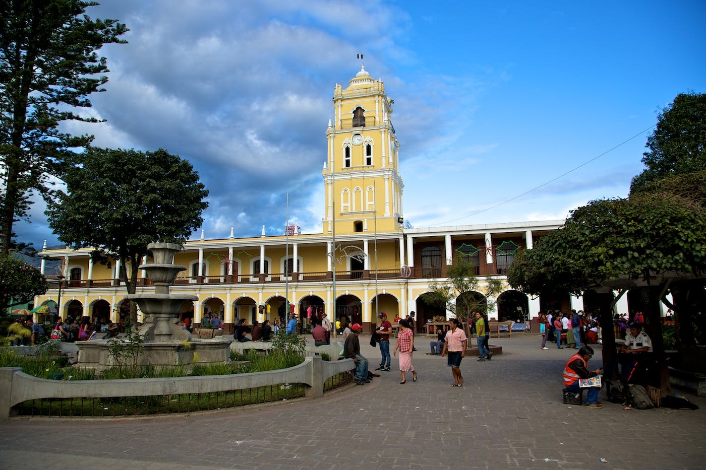

Durante el período clásico (250-900 DC) Huehuetenango formaba parte del Reino Mam, que dominaba la mayor parte de las tierras montañosas del occidente del país, hasta que los Quichés los sacaron en 1525. Esta región tenía antecedentes de liberalismo y rebelión. Había proclamado la independencia antes de que fuera oficialmente reconocida para el país y formó parte del levantamiento en 1870 y contribuyó a la dictadura de Manuel Estrada Cabrera, presidente de Guatemala en aquel entonces.
Huehuetenango fue creado como un departamento del “Estado de los Altos” y se mantuvo así desde 1839 hasta 1877, cuando se convirtió en un departamento independiente, como lo es hoy día.
Huehuetenango significa ciudad de los viejos o ciudad de los árboles, pero antes de la conquista era llamado Xinabajul, que en mam significa ciudad entre barrancos. Fueron los Tlaxcaltecas, indígenas mexicanos que acompañaban a los conquistadores, quienes cambiaron el nombre de la ciudad.
